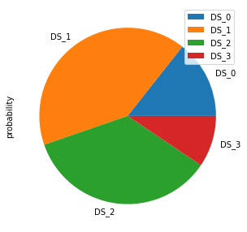
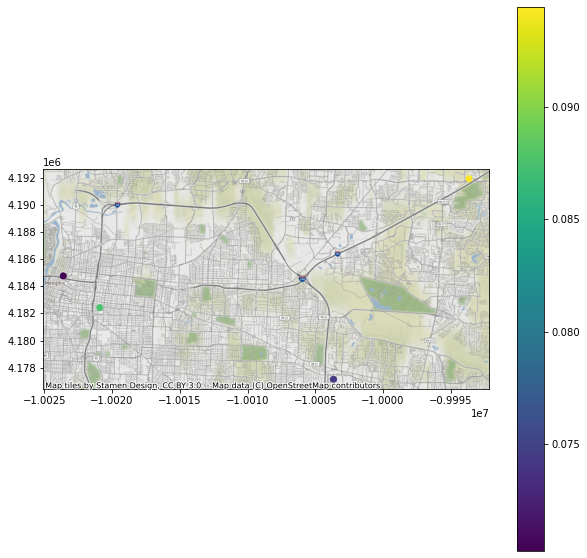

Session 4: Assignment explanation and answers#
View datasets and create visualization.
# Import modules
from pyincore import FragilityService, IncoreClient, FragilityCurveSet, MappingSet, Dataset
from pyincore_viz.plotutil import PlotUtil as plot
from pyincore_viz.geoutil import GeoUtil as geoviz
# Connect to IN-CORE serivce by creating IncoreClient
client = IncoreClient()
Connection successful to IN-CORE services. pyIncore version detected: 0.9.3
# Exercise 1:
# TODO: create a local dataset for building inventory with shapefiles ("sample_bldgs_w_guid.shp")
# and dataset inventory IN-CORE type: "ergo:buildingInventoryVer7"
# TODO: acquire GeoDataFrame object from the dataset
# Answer:
# There is a shape file in your local directory. Sample building inventory has 4 files defining
# the projection, attributes and other parts of a shape file (cpg, dbf, prj, shp, shx)
# use class method Dataset.from_file with path, filename and corresponding data type.
# Dataset.from_file(path, data_type)
bldgs = Dataset.from_file("sample_bldgs_w_guid.shp", data_type="ergo:buildingInventoryVer7")
# Object bldgs is now in pyincore object type. BTW pyIncore uses Fiona package to open shapefiles.
print(type(bldgs))
# Construct GeoPanda's GeoDataFrame from a pyincore type.
# getting geodataframe of building dataset
bldgs_gdf = bldgs.get_dataframe_from_shapefile()
print(type(bldgs_gdf))
# show first five rows only
bldgs_gdf.head()
<class 'pyincore.dataset.Dataset'>
<class 'geopandas.geodataframe.GeoDataFrame'>
| parid | struct_typ | year_built | no_stories | a_stories | b_stories | bsmt_type | sq_foot | gsq_foot | occ_type | ... | archetype | appr_land | appr_tot | ffe_elev | g_elev | lhsm_elev | lon | lat | guid | geometry | |
|---|---|---|---|---|---|---|---|---|---|---|---|---|---|---|---|---|---|---|---|---|---|
| 0 | 018060 00010 | C1 | 1978 | 1 | 1 | 0 | NONE | 6062 | 6062 | COM6 | ... | 12 | None | None | None | None | None | -90.02585 | 35.14020 | ac8b0b44-ae82-4c48-afb8-076e2d16c7e5 | POINT (-90.02585 35.14020) |
| 1 | 018060 00010 | C1 | 1925 | 4 | 3 | 1 | COMMERCIAL BSMT | 19468 | 4867 | COM6 | ... | 12 | None | None | None | None | None | -90.02585 | 35.14020 | 154b0a62-cae6-456d-8d90-635e3e1c2dcb | POINT (-90.02585 35.14020) |
| 2 | 016001 00001C | S1 | 1924 | 14 | 13 | 1 | COMMERCIAL BSMT | 910583 | 65042 | COM6 | ... | 12 | None | None | None | None | None | -90.01928 | 35.13640 | 9f9b11f8-c25c-4760-b1d2-a63bbeec8e72 | POINT (-90.01928 35.13640) |
| 3 | 012008 00012 | URM | 1910 | 5 | 3 | 2 | COMMERCIAL BSMT | 65112 | 13022 | COM6 | ... | 12 | None | None | None | None | None | -90.07377 | 35.12344 | 28321416-e473-473b-ad0a-c3c38248acc7 | POINT (-90.07377 35.12344) |
| 4 | 001041 00001C | S1 | 1991 | 2 | 2 | 0 | NONE | 32094 | 16047 | COM6 | ... | 12 | None | None | None | None | None | -90.04349 | 35.15360 | b5069250-7a2b-47b1-9754-290528a6d72d | POINT (-90.04349 35.15360) |
5 rows × 34 columns
# Exercise 2:
# TODO: create a local dataset for building damage output with CSV ("memphis_eq_bldg_dmg_result.csv") -
# it should be in your browser if you ran session 4 notebook (dataset inventory IN-CORE type: "ergo:buildingDamageVer5")
# TODO: acquire DataFrame object from the dataset
# Answer:
# A CSV file with guid, limit states and damage states is one of two resulting files of Infrastructure Damage Analyses
# (building, pipeline etc.). The second, json file contains fragility ids, hazard values and other metadata
# Locate CSV file in Jupyter browser directory
# Retrieve result dataset. If there is no csv file you need to run Building Damage Analyses from session 4 notebook.
bldgs = Dataset.from_file("memphis_eq_bldg_dmg_result.csv", data_type="ergo:buildingDamageVer5")
# Convert dataset to Pandas DataFrame
bldgs_df = bldgs.get_dataframe_from_csv()
print(type(bldgs_df))
# show first five rows only
bldgs_df.head()
<class 'pandas.core.frame.DataFrame'>
| guid | LS_0 | LS_1 | LS_2 | DS_0 | DS_1 | DS_2 | DS_3 | |
|---|---|---|---|---|---|---|---|---|
| 0 | ac8b0b44-ae82-4c48-afb8-076e2d16c7e5 | 0.848149 | 0.327322 | 2.722964e-02 | 0.151851 | 0.520827 | 0.300092 | 2.722964e-02 |
| 1 | 154b0a62-cae6-456d-8d90-635e3e1c2dcb | 0.844343 | 0.328299 | 2.860543e-02 | 0.155657 | 0.516043 | 0.299694 | 2.860543e-02 |
| 2 | 9f9b11f8-c25c-4760-b1d2-a63bbeec8e72 | 0.896774 | 0.480925 | 8.756720e-02 | 0.103226 | 0.415849 | 0.393358 | 8.756720e-02 |
| 3 | 28321416-e473-473b-ad0a-c3c38248acc7 | 0.828098 | 0.293753 | 2.738378e-02 | 0.171902 | 0.534345 | 0.266369 | 2.738378e-02 |
| 4 | b5069250-7a2b-47b1-9754-290528a6d72d | 0.970343 | 0.154677 | 1.000000e-10 | 0.029657 | 0.815666 | 0.154677 | 1.000000e-10 |
# Exercise 3:
# TODO: Join/merge building inventory GeoDataframe and damage output Dataframe using results of Excercise 1 and 2.
# Answer:
# We now have two objects, Geopanda's GeoDataFrame with buildings attributes and coordinates
# and Panda's DataFrame with Damage states. Both objects have GUID referencing buildings.
# Merge/join two dataframe using GUID. We can also specify first three columns, guid, struct_typ and geometry,
# and their order.
bldgs_joined_gdf = bldgs_gdf[['guid', 'struct_typ', 'geometry', 'appr_bldg']].merge(bldgs_df, on='guid')
bldgs_joined_gdf.head()
| guid | struct_typ | geometry | appr_bldg | LS_0 | LS_1 | LS_2 | DS_0 | DS_1 | DS_2 | DS_3 | |
|---|---|---|---|---|---|---|---|---|---|---|---|
| 0 | ac8b0b44-ae82-4c48-afb8-076e2d16c7e5 | C1 | POINT (-90.02585 35.14020) | 163315 | 0.848149 | 0.327322 | 2.722964e-02 | 0.151851 | 0.520827 | 0.300092 | 2.722964e-02 |
| 1 | 154b0a62-cae6-456d-8d90-635e3e1c2dcb | C1 | POINT (-90.02585 35.14020) | 524485 | 0.844343 | 0.328299 | 2.860543e-02 | 0.155657 | 0.516043 | 0.299694 | 2.860543e-02 |
| 2 | 9f9b11f8-c25c-4760-b1d2-a63bbeec8e72 | S1 | POINT (-90.01928 35.13640) | 49457042 | 0.896774 | 0.480925 | 8.756720e-02 | 0.103226 | 0.415849 | 0.393358 | 8.756720e-02 |
| 3 | 28321416-e473-473b-ad0a-c3c38248acc7 | URM | POINT (-90.07377 35.12344) | 367311 | 0.828098 | 0.293753 | 2.738378e-02 | 0.171902 | 0.534345 | 0.266369 | 2.738378e-02 |
| 4 | b5069250-7a2b-47b1-9754-290528a6d72d | S1 | POINT (-90.04349 35.15360) | 1027399 | 0.970343 | 0.154677 | 1.000000e-10 | 0.029657 | 0.815666 | 0.154677 | 1.000000e-10 |
# Exercise 4:
# TODO: Using joined GeoDataFrame, display the table grouped by "struct_type" and show a sum of apprasial
# value of buildings "appr_bldg"
# Answer:
# We have a joined object, GeoDataFrame bldgs_joined_gdf with all attributes (columns). We can show only guid
# and struct_type and appr_bldg columns. Dont forget to keep geometry column or new dataframe
# will not be georeferenced
bldgs_new = bldgs_joined_gdf[['guid', 'geometry', 'struct_typ', 'appr_bldg']]
bldgs_new.head()
| guid | geometry | struct_typ | appr_bldg | |
|---|---|---|---|---|
| 0 | ac8b0b44-ae82-4c48-afb8-076e2d16c7e5 | POINT (-90.02585 35.14020) | C1 | 163315 |
| 1 | 154b0a62-cae6-456d-8d90-635e3e1c2dcb | POINT (-90.02585 35.14020) | C1 | 524485 |
| 2 | 9f9b11f8-c25c-4760-b1d2-a63bbeec8e72 | POINT (-90.01928 35.13640) | S1 | 49457042 |
| 3 | 28321416-e473-473b-ad0a-c3c38248acc7 | POINT (-90.07377 35.12344) | URM | 367311 |
| 4 | b5069250-7a2b-47b1-9754-290528a6d72d | POINT (-90.04349 35.15360) | S1 | 1027399 |
# Exercise 4 cont.:
# Run stastics on a column.
# Sum of all rows = 270,160,346
total = bldgs_new["appr_bldg"].sum()
print(total)
270160346
# Exercise 4 cont.:
# Run stastics on a column (first five rows).
# Sum of 5 rows = 51,539,552 with mean value of 10,307,910
bldgs_new["appr_bldg"].head().describe()
count 5.000000e+00
mean 1.030791e+07
std 2.188736e+07
min 1.633150e+05
25% 3.673110e+05
50% 5.244850e+05
75% 1.027399e+06
max 4.945704e+07
Name: appr_bldg, dtype: float64
# Exercise 5:
# TODO: Using joined GeoDataFrame, plot a pie chart of (DS_0, DS_1, DS_2, DS_3) with a building with highest
# value of DS_3
# Answer:
# We have a joined object, GeoDataFrame bldgs_joined_gdf with all attributes (columns). We can create a new one
# only with guid and damage states probability values.
df_ds = bldgs_joined_gdf[['guid', 'DS_0', 'DS_1', 'DS_2', 'DS_3']]
df_ds.head()
| guid | DS_0 | DS_1 | DS_2 | DS_3 | |
|---|---|---|---|---|---|
| 0 | ac8b0b44-ae82-4c48-afb8-076e2d16c7e5 | 0.151851 | 0.520827 | 0.300092 | 2.722964e-02 |
| 1 | 154b0a62-cae6-456d-8d90-635e3e1c2dcb | 0.155657 | 0.516043 | 0.299694 | 2.860543e-02 |
| 2 | 9f9b11f8-c25c-4760-b1d2-a63bbeec8e72 | 0.103226 | 0.415849 | 0.393358 | 8.756720e-02 |
| 3 | 28321416-e473-473b-ad0a-c3c38248acc7 | 0.171902 | 0.534345 | 0.266369 | 2.738378e-02 |
| 4 | b5069250-7a2b-47b1-9754-290528a6d72d | 0.029657 | 0.815666 | 0.154677 | 1.000000e-10 |
# Exercise 5 cont:
# Return the entire row with max value of DS_3 column
df = df_ds[df_ds['DS_3']==df_ds['DS_3'].max()]
df.head()
| guid | DS_0 | DS_1 | DS_2 | DS_3 | |
|---|---|---|---|---|---|
| 14 | 6dd342ef-498c-43a9-85cd-35ad76e4c279 | 0.143819 | 0.409244 | 0.352468 | 0.094468 |
# Exercise 5 cont:
# We use Panda's plot method for pie chart visualization of our four DS probabilities.
# First, the dataframe must be transposed to get rows of DS
df_pie = df[['DS_0', 'DS_1', 'DS_2', 'DS_3']].transpose()
# Rename the column for proper legend
df_pie.columns = ['probability']
df_pie.head()
| probability | |
|---|---|
| DS_0 | 0.143819 |
| DS_1 | 0.409244 |
| DS_2 | 0.352468 |
| DS_3 | 0.094468 |
# Exercise 5 cont:
# Create pie chart
plot = df_pie.plot.pie(subplots=True, figsize=(5, 5))

# Exercise 6:
# TODO: Using joined GeoDataFrame, display a table of buidings with DS_3 >= 0.05 and sorted by DS_3
# Answer:
# We have our joined object, GeoDataFrame bldgs_joined_gdf with all attributes (columns). We can create
# a new one only with guid and damage states probability values:
# df_ds = bldgs_joined_gdf[['guid', 'DS_0', 'DS_1', 'DS_2', 'DS_3']]
# or re-use df_ds object from Exercise 5
df_ds3 = df_ds[df_ds['DS_3']>=0.05]
df_ds3.sort_values(by=['DS_3'])
| guid | DS_0 | DS_1 | DS_2 | DS_3 | |
|---|---|---|---|---|---|
| 6 | 11395729-3727-449d-9848-778d68edd7d8 | 0.076171 | 0.432794 | 0.420815 | 0.070220 |
| 11 | d7603d04-6917-478c-8bb7-50cf9118f973 | 0.119953 | 0.434135 | 0.371550 | 0.074362 |
| 2 | 9f9b11f8-c25c-4760-b1d2-a63bbeec8e72 | 0.103226 | 0.415849 | 0.393358 | 0.087567 |
| 14 | 6dd342ef-498c-43a9-85cd-35ad76e4c279 | 0.143819 | 0.409244 | 0.352468 | 0.094468 |
# Exercise 7:
# TODO: Using joined GeoDataFrame, plot a map of buidings with DS_3 >= 0.05 and sorted by DS_3
# Answer:
# We have sorted object, df_ds3 from Exercise 6 however we removed the geometry. We need to go back and use
# georeferenced object bldgs_joined_gdf with guid, geometry and DS_3.
bldgs_ds3 = bldgs_joined_gdf[['guid', 'geometry', 'DS_3']]
bldgs_ds3.head()
| guid | geometry | DS_3 | |
|---|---|---|---|
| 0 | ac8b0b44-ae82-4c48-afb8-076e2d16c7e5 | POINT (-90.02585 35.14020) | 2.722964e-02 |
| 1 | 154b0a62-cae6-456d-8d90-635e3e1c2dcb | POINT (-90.02585 35.14020) | 2.860543e-02 |
| 2 | 9f9b11f8-c25c-4760-b1d2-a63bbeec8e72 | POINT (-90.01928 35.13640) | 8.756720e-02 |
| 3 | 28321416-e473-473b-ad0a-c3c38248acc7 | POINT (-90.07377 35.12344) | 2.738378e-02 |
| 4 | b5069250-7a2b-47b1-9754-290528a6d72d | POINT (-90.04349 35.15360) | 1.000000e-10 |
# Exercise 7 cont:
# We filter buildings by DS_3 value and sort them:
ds3 = bldgs_ds3[bldgs_ds3['DS_3']>=0.05]
ds3_sorted = ds3.sort_values(by=['DS_3'])
ds3_sorted.head()
| guid | geometry | DS_3 | |
|---|---|---|---|
| 6 | 11395729-3727-449d-9848-778d68edd7d8 | POINT (-90.04349 35.15360) | 0.070220 |
| 11 | d7603d04-6917-478c-8bb7-50cf9118f973 | POINT (-89.86438 35.09755) | 0.074362 |
| 2 | 9f9b11f8-c25c-4760-b1d2-a63bbeec8e72 | POINT (-90.01928 35.13640) | 0.087567 |
| 14 | 6dd342ef-498c-43a9-85cd-35ad76e4c279 | POINT (-89.77456 35.20624) | 0.094468 |
# Exercise 7 cont:
# Plot a map of ds3_sorted GeoPandasDataset with pyincore_viz
geoviz.plot_gdf_map(ds3_sorted, 'DS_3', basemap=True)
